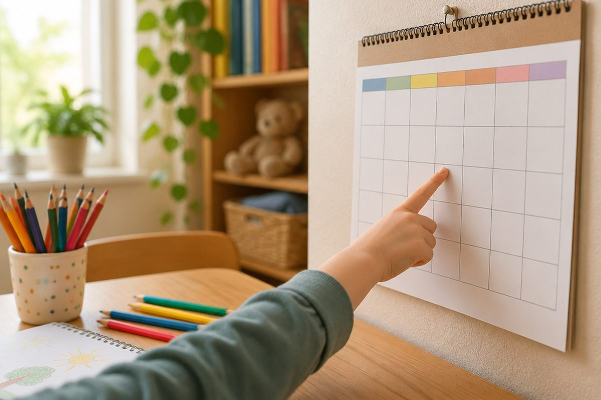

오늘은 몇 월 며칠, 무슨 요일일까요?

달력을 보며 '오늘이 며칠이지?' 하고 물어본 적 있지요? 중국어로도 날짜와 요일을 묻고 말할 수 있어요. 숫자만 알면 생각보다 아주 쉬워요!
月(yuè)와 号(hào)로 날짜를 말해요
'몇 월'은 숫자 뒤에 月(yuè, 위에)를 붙여요. 一月(yī yuè)는 1월, 十二月(shí'èr yuè)는 12월이에요.
'며칠'은 숫자 뒤에 号(hào, 하오)를 붙여요. 그래서 5월 5일은 五月五号(wǔ yuè wǔ hào, 우 위에 우 하오)예요. 글로 쓸 때는 号 대신 日(rì)를 쓰기도 해요.
순서는 우리말과 같아요. 월 → 일 순서로 말하면 돼요.
三月一号 = 3월 1일 / 十月九号 = 10월 9일
今天几月几号？— 오늘은 몇 월 며칠이에요?
今天(jīntiān, 진티엔)은 '오늘'이에요. 几(jǐ)는 '몇'이니까, 今天几月几号？(jīntiān jǐ yuè jǐ hào, 진티엔 지 위에 지 하오)는 '오늘은 몇 월 며칠이에요?'예요.
대답할 때는 几 자리에 숫자를 넣으면 돼요. 今天五月五号。는 '오늘은 5월 5일이에요.'예요.
明天(míngtiān, 밍티엔)은 '내일', 昨天(zuótiān, 쭤티엔)은 '어제'예요.
A: 今天几月几号？ B: 今天十月九号。(오늘은 10월 9일이야.)
요일은 星期(xīngqī) + 숫자예요
요일은 星期(xīngqī, 싱치) 뒤에 숫자를 붙여요. 월요일이 星期一(xīngqīyī), 화요일이 星期二(xīngqī'èr), 수요일이 星期三(xīngqīsān)이에요.
목요일 星期四(xīngqīsì), 금요일 星期五(xīngqīwǔ), 토요일 星期六(xīngqīliù)까지 숫자 차례예요. 일요일만 숫자가 아니라 星期天(xīngqītiān, 싱치티엔) 또는 星期日(xīngqīrì)라고 해요.
무슨 요일인지 물을 때는 今天星期几？(jīntiān xīngqī jǐ, 진티엔 싱치 지)라고 해요.
星期一(월) 星期二(화) 星期三(수) 星期四(목) 星期五(금) 星期六(토) 星期天(일)
내 생일을 말해 봐요
的(de, 더)는 '~의'라는 뜻이에요. 我的生日(wǒ de shēngrì, 워 더 셩르)는 '나의 생일'이에요.
我的生日是三月十号。는 '내 생일은 3월 10일이에요.'예요. 친구에게는 你的生日是几月几号？라고 물어보세요.
생일인 친구에게는 生日快乐！(shēngrì kuàilè, 셩르 콰이러), '생일 축하해!'라고 말해 줘요.
A: 你的生日是几月几号？ B: 我的生日是三月十号。
핵심 낱말
- 月 (yuè)
- 월(달)
- 号 (hào)
- 일(날짜)
- 星期 (xīngqī)
- 요일, 주
- 今天 (jīntiān)
- 오늘
- 生日 (shēngrì)
- 생일
꼭 알아야 할 표현
| 今天几月几号？ | 오늘은 몇 월 며칠이에요? | jīntiān jǐ yuè jǐ hào (진티엔 지 위에 지 하오) |
| 今天五月五号。 | 오늘은 5월 5일이에요. | jīntiān wǔ yuè wǔ hào (진티엔 우 위에 우 하오) |
| 今天星期几？ | 오늘은 무슨 요일이에요? | jīntiān xīngqī jǐ (진티엔 싱치 지) |
| 今天星期一。 | 오늘은 월요일이에요. | jīntiān xīngqīyī (진티엔 싱치이) |
| 明天星期六。 | 내일은 토요일이에요. | míngtiān xīngqīliù (밍티엔 싱치리우) |
| 星期天 | 일요일 | xīngqītiān (싱치티엔) |
| 昨天 | 어제 | zuótiān (쭤티엔) |
| 我的生日是三月十号。 | 내 생일은 3월 10일이에요. | wǒ de shēngrì shì sān yuè shí hào (워 더 셩르 스 싼 위에 스 하오) |
| 你的生日是几月几号？ | 네 생일은 몇 월 며칠이야? | nǐ de shēngrì shì jǐ yuè jǐ hào (니 더 셩르 스 지 위에 지 하오) |
| 生日快乐！ | 생일 축하해! | shēngrì kuàilè (셩르 콰이러) |
한 줄 정리
- 날짜는 숫자 + 月(월), 숫자 + 号(일) 순서로 말해요. 五月五号 = 5월 5일.
- 요일은 星期 + 숫자(星期一 = 월요일)이고, 일요일은 星期天이에요.
- 今天几月几号？(며칠?) / 今天星期几？(무슨 요일?)로 물어요.
학교 교육과정 연결 (가정 학습 과정)
초등학교 정규 교육과정에는 중국어가 없어요. 처음 배우는 아이를 위한 가정 학습용 입문 단원이에요.
참고한 자료
- 汉语拼音方案 (한어 병음 방안, 1958년 중국 전국인민대표대회 승인) — 병음·성조 표기 기준